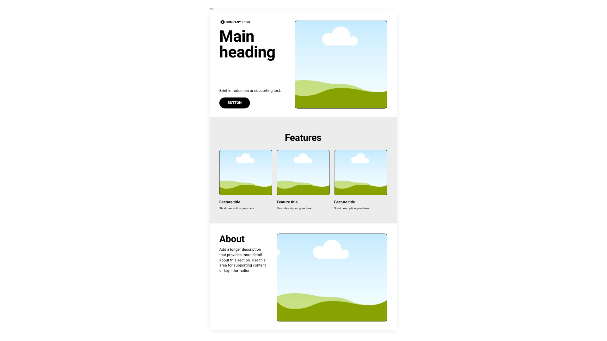
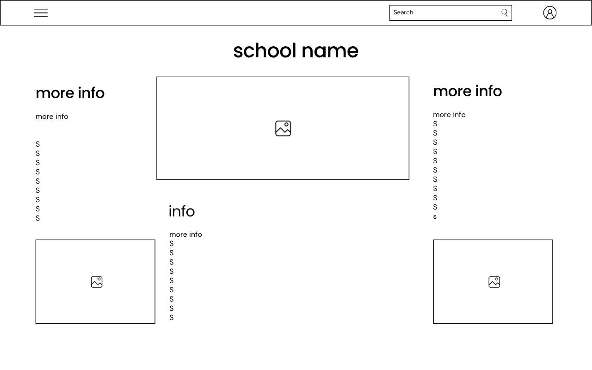

Site Name
Name: Pepito's School
Reasoning: I picked this topic because a school website is a practical, real-world project where I can apply everything we’ve been learning in class. It allows me to structure clean, accessible HTML and CSS, while giving me plenty of opportunities to build cool JavaScript features—like dynamic content filtering, modal views, and smooth interactive UI elements.
Optional Domain: pepitoschool.edu.do
Site Purpose
This website will help Pepito's School attract prospective students and parents by providing clear information about academic programs, admissions requirements, and campus life. It will also feature an interactive contact form allowing families to request additional information or schedule a campus visit.
Target Audience Scenarios
- Scenario 1: What is the difference between Pepito's School and other regional schools?
- Scenario 2: What academic programs, scholarships, and job-preparation courses do they offer for graduating students?
Color Scheme
The following colors reflect an educational and reliable brand theme:
- Primary Color (Navy Blue -
#003366): Used for headers, footers, main navigation backgrounds, and primary section titles. - Secondary Accent Color (Bright Blue -
#0056b3): Used for call-to-action buttons, links, active menu items, and interactive highlights. - Background & Neutral Color (Light Slate -
#f8f9fa): Used for content card backgrounds, modal dialog containers, and subtle section dividers.
Typography
- Heading Font (Roboto): Applied to all major headings (
h1,h2,h3) for a clean, structural, and professional look. - Body Font (Open Sans): Applied to paragraphs, list items, button labels, and form input controls for maximum readability across screen resolutions.
Wireframes
Layout sketches representing structural hierarchy and element placement across screen sizes:

